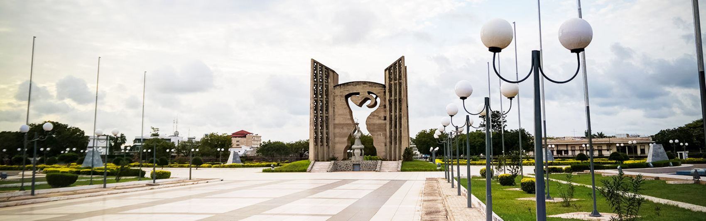

 Vue de la place de l'indépendance
Que ce soit pour des fins professionnelles ou encore une soif de découverte de nouveaux horizons et si c'est votre première fois que vous débarquez au pays voisin du Benin et du Ghana alors: nous vous souhaitons la bienvenue ou comme on le dit dans l'éwé, une langue locale du sud du Togo "Wéozon va do Togo".
Choisir de partir en voyage ou même de résider au Togo, c’est opter pour un pays à taille humaine. Les distances ont beau paraître courtes, la superficie plutôt modeste (56785 km2) mais le Togo offre à qui se décide à venir le découvrir un véritable panel de cultures et des paysages variés. En vous penchant un peu sur votre futur itinéraire au Togo, vous allez très vite vous rendre compte que le choix peut s’avérer bien plus large qu’il n’y parait d’un premier abord.
Allez, nous vous présentons quelques places à visiter absolument sur au pays des éperviers:)
Toutes les 5 régions du Togo présentent un attrait touristique du sud au Nord. Nous avons donc opté dans cette cette rubrique,vous donner celles les plus visitées par les touristes. Voici donc pour vous, 5 places parmi les plus attractives du Togo:
Le littoral togolais (région maritime) : il vous offre sa plage bordée d’une frange de cocotiers. Le Togo a un atout d'être limité au Sud par l'océan Atlantique et son port autonome de Lomécompta parmi les mieux classés de l'Afrique de l'Ouest.
Le long du littoral sont ammenagés des resto-bar et l'ambiance du Week-end vous donnera du requiquant ;). Un aperçu du Port Autonome de Lomé: Cliquez pour voir
Cap sur la région centrale, troisième région abritant la célèbre "Faille au niveau de la ville d'Alédjo" . La falaise de cette célèbre faille semble avoir été cisaillée par un coup d’épée à cet endroit.
La voie a en réalité été ouverte à l’époque par les Allemands. C’était un passage très délicat pour beaucoup de poids lourds qui rejoignent les pays sahéliens, souvent surchargés des produits du port autonome de Lomé. Elle est devenue une route touristique très belle et non surchargée avec de beaux panoramas sur les montagnes.Vous trouverez égalemebt dans la ville d'Alédjo une réserve de faune composée de mammifères de petite taille, essentiellement des primates. Aperçu de la faille d'Alédjo: La faille d'Alédjo
Partons dans la région de la Kara , découvrir la Mare aux Hippopotames. Juste derrière la butte, se trouve un lac où barbotent les hippopotames. On peut les observer autour du plan d'eau tôt le matin, vers 6h ou bien en fin d'après-midi, à partir de 16h30. Pendant la journée, la myriade d'hippopotames s'immerge complètement pour ne pas subir la chaleur, laissant parfois une paire d'yeux refaire surface. Un promontoire a été construit pour les observer. La piste est tout aussi admirable que l'activité en elle-même, avec les rizières importées par les Chinois il y a des décennies, et toujours exploitées par les familles locales. voir la mare aux hypopotames
Terminus,Le parc national de la Fosse aux Lions est un parc national situé dans la région des Savanes du Togo, d'une superficie de 16,4 km². Le parc a été créé en 1954, à l'époque où le Togo faisait partie de l'Afrique occidentale française, en tant que « forêt classée » Parc national de la fosse aux lions - TOGO